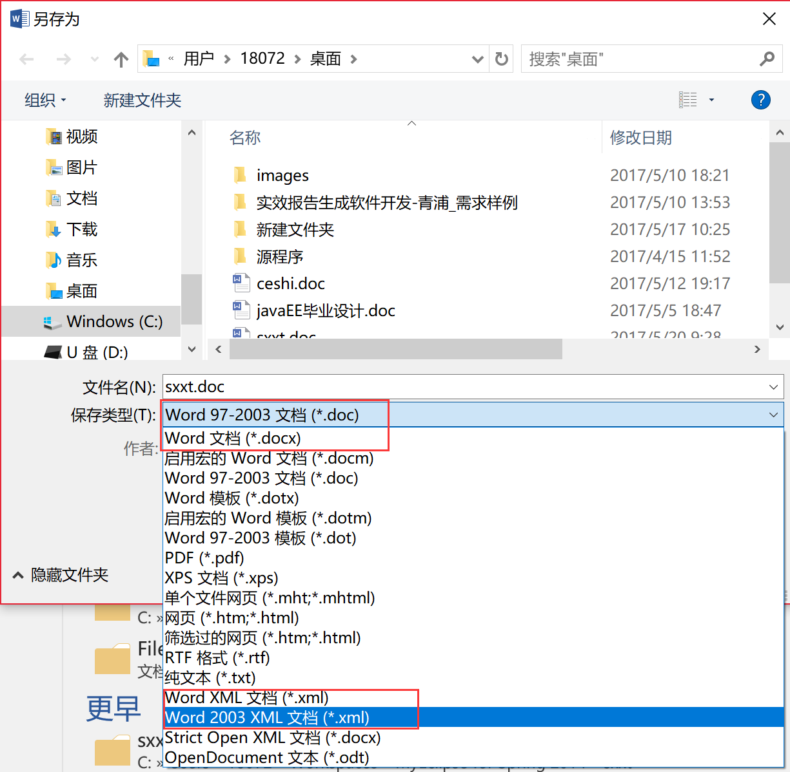
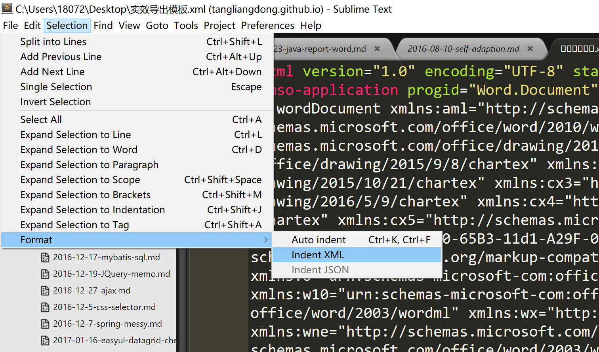
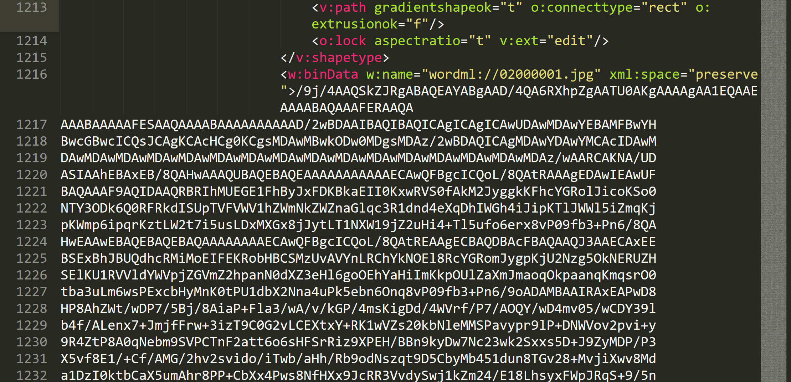

java通过freemarker导出doc
制作word模板
用 word制作 .doc后缀的 word，也可以用 .docx后缀的 word，但是在导出 xml的时候需要导出为2003版本的 xml格式，切记不要导出为07年以后的 xml。
后缀为 .doc的 word只能通过03年的 xml文件生成，而 .docx的word只能通过07年以后的 xml生成。
03年的 .doc是通过二进制存储的，而07年以后的 .docx是通过 xml构建的。虽然都能做模板，但是要生成 .docx，导入图片的问题，我还没找到解决方案，但是导出 .doc可以将图片装成 Base64格式，然后直接加到 xml文件的标签里面。如下
1 | <w:binData w:name="wordml://02000004.png">${item.problemImg}</w:binData> |

制作freemarker模板
使用xml插件格式化代码
导出成功后，把后缀 .xml 改成 .ftl 这样就成为freemarker的模板了，再用sublime打开，用Indent xml格式化工具将xml格式化下，没有的话通过 package control插件 在线搜索下载 Indent xml插件。
不会装sublime插件的话，可以去看我以前写的一篇博客：sublime text 3 插件分享。
然后打开菜单栏里的 Selection->Format->Indent XML,如下图

不然代码全部堆在一起根本不能看，格式化代码可以极大的提高效率。
在word中插入图片
插入文字比较简单，比较容易出问题的就是插入图片。
如果制作的word模板里有图片的话，那导出的xml文件里会有如下图大片的乱码

直接将这片代码换成freemarker的标记：
1 | <w:pict> |
- 有个注意点，如果这段代码只出现一次，不需要循环，而且制作模板时这张图片只使用了一次，其他任何地方的图片用的都不是这一张图片，那只要这样写就行了。
- 如果需要循环输出图片，上面代码有两处需要修改，不然所有循环生成的图片都会变成循环体的最后一张图片。
第一个标签的w:name 属性和 src 属性需要保持一致，而且03000005.png 这个图片名称在整个word里需要保持唯一性。所以在循环生成图片的时候，需要在这两个属性里面加上具有唯一性的字段，以防止图片重复。
<w:binData w:name="wordml://03000005.png">${Base64_img}</w:binData>
<v:imagedata o:title="1491978958037" src="wordml://03000005.png"/>
相反的，当然如果你要让图片重复，只需让其他图片的 <v:imagedata />这个标签的src属性写出和需要显示的<w:binData />的 w:name 标签一致就行了。
说到这里，其实很容易就发现：
下面这个标签是用来在word里保存图片的。出现这个标签，并不会在word里上显示图片
1 | <w:binData w:name="wordml://03000005.png">${Base64_img}</w:binData> |
而下面这个标签则是用来显示图片的，以及保存图片自身的样式，通过 <v:imagedata /> 的 src 属性来显示对应的通过<w:binData>${Base64_img}</w:binData> 这个标签保存的图片。
1 | <v:shape alt="C:\Users\18072\AppData\Local\Microsoft\Windows\INetCache\Content.Word\1491978958037.png" id="图片" o:spid="_x0000_s1040" style="position:absolute;left:0;text-align:left;margin-left:-1.1pt;margin-top:-110.4pt;width:83.05pt;height:110.25pt;z-index:-15;mso-position-horizontal-relative:text;mso-position-vertical-relative:text" type="#_x0000_t75" wrapcoords="-195 0 -195 21453 21600 21453 21600 0 -195 0"> |
当然仅仅是这样还不行，我们将图片读进程序的时候，需要将图片转成Base64编码格式，然后才能输出到.ftl模板里。
需要导入 sun.misc.BASE64Decoder.jar
1 | /** |
直接调用上面的方法就行了，把图片的绝对路径传入，然后直接把返回值存在变量里，传入freemarker模板，就会显示图片了。
把变量引入模板
1 | Configuration configuration = new Configuration(Configuration.VERSION_2_3_23); |
一些常用的freemarker标签
输出 ${}
通过${title}输出变量的内容，如果该表里为空，则会报错，所以可以像下面这么写，如果title为空，则输出后面的”this var is null”。
1 | ${title!"this var is null"} <!-- 输出 this var is null --> |
或者先判断该变量是否存在
1 | <#if title??> |
循环遍历 <#list></#list>
1 | <#list arr as item> |
判断 <#if></#if>
1 | <!-- 判断content是不是空 --> |
freemarker模板里面不能用 <> 大于小于号，因为会和 xml的格式的尖括号闭合，发生错误。
因此如果要表示大于小于，需要用符号代替：
- 用符号代替
- >(gt) 大于号
- >=(gte) 大于等于号
- <(lt) 小于号
- <=(lte) 小于等于号
- 大于小于号 外面加括号
- <#if(x>y) ></#if>